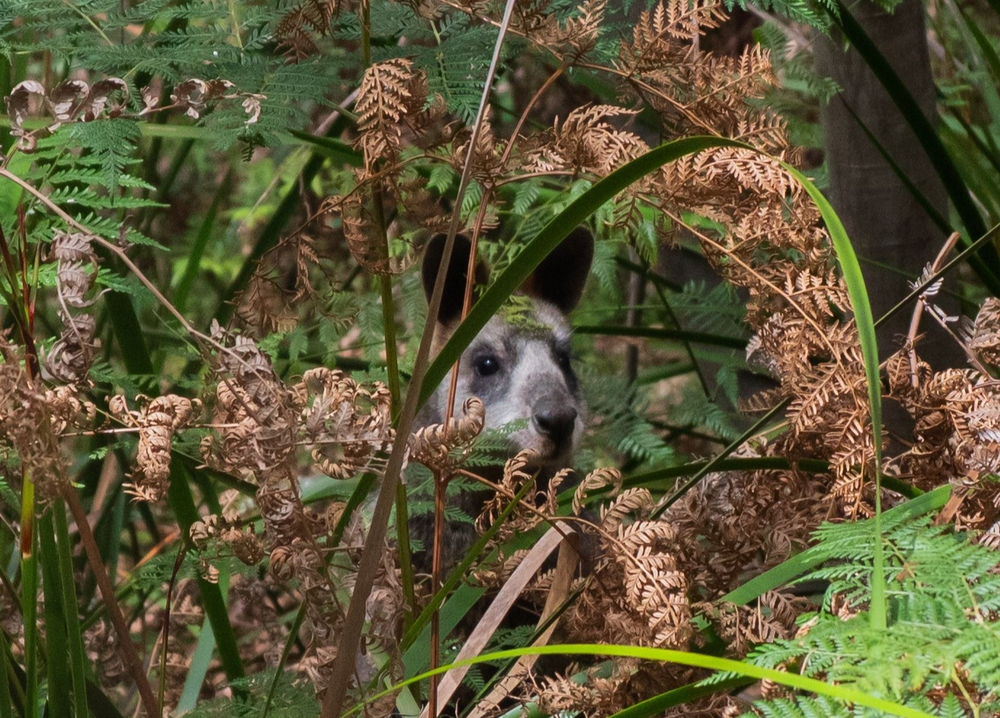
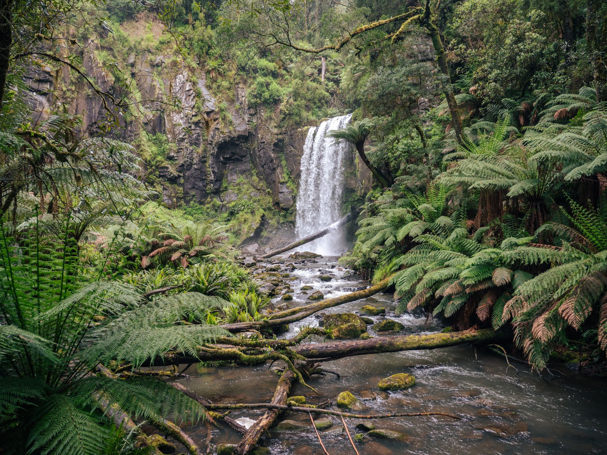

I've entered the WWF-Australia Photography for Nature Competition. Follow the links below to vote for my entries.
You get one free vote, and any extra votes can be made through donations that help protect Australian wildlife and their habitats.
